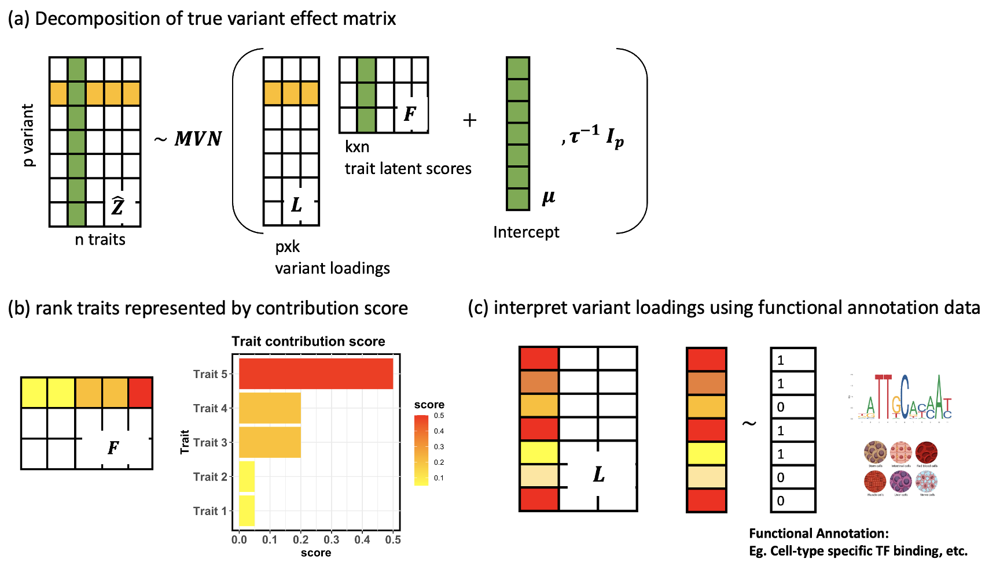
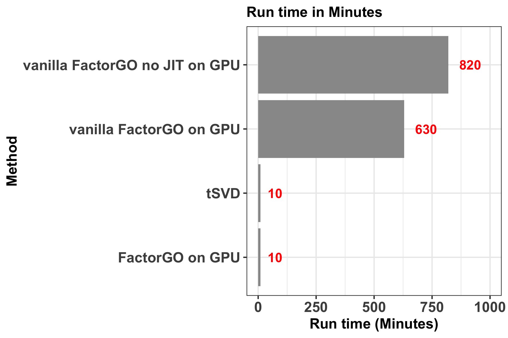
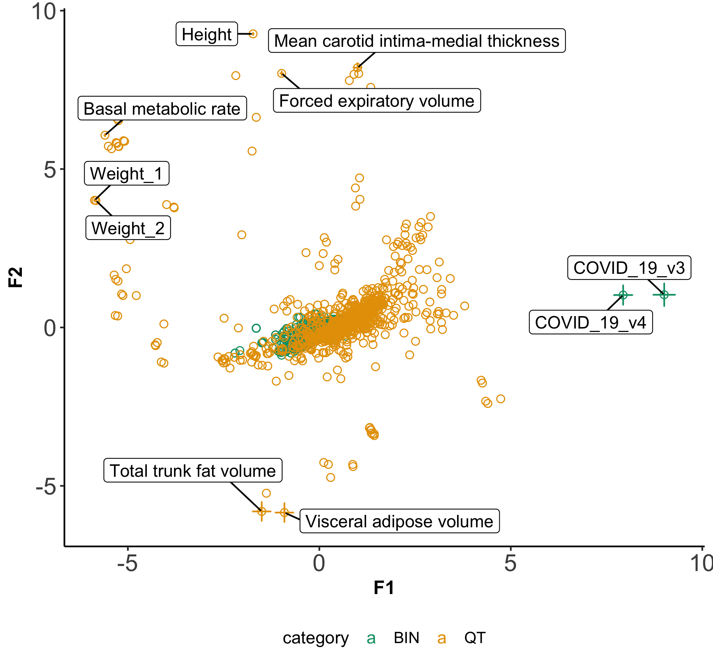
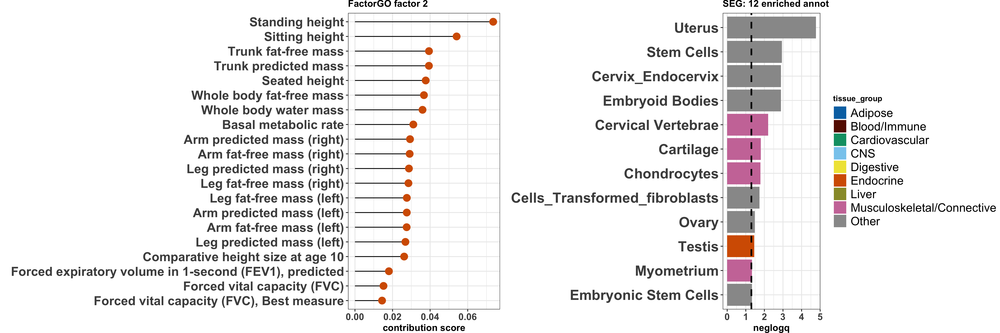
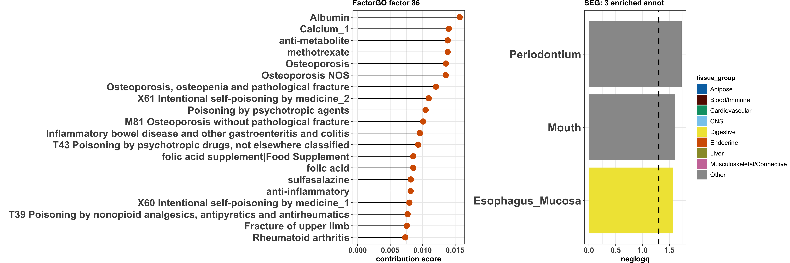

We constructed data matrix of Z score summmary statistics for 51,399
genetic variants among 2,483 traits from Pan-UK Biobank. After
inferring K=100 latent factors, we interpret each factor by:
1) Fig b: quantify relative importance of trait within a factor by
contribution score, as described elsewhere.
2) Fig c: test for enrichment of cell type specific functional
annotation using LDSC.

FactorGO implemented using Just-In-Time (JIT) compilation via JAX package in python under a parameter expansion method substantially improves convergence rate, which make its run time on 2-cores GPU comparable to tSVD:

To look at the pleiotropic factors, we start with top 2 factors that explains most variance in the data. The first factor characterize shared co-morbidity between Covid-19 and body weight, basal metabolic rate that is relevant with BMI. The second factor characterize overall human growth such as height, artery measure, and body fat volume.

*highlighted points are flanked by 2 times posterior variance
For standing height, the most relevant pleiotropic factor is factor 2. In this factor, the leading traits are body measures such as standing height, sitting height, followed by fat-free mass measurements. These reflect the growth hormones play roles in both height growth and metabolic pathways. Moreover, this factor is enriched with genes differentially expressed in reproductive organs like Uterus and Cervix and muscular skeletal tissues like cartilage and chondrocytes , which is consistent with previous findings (Wood et al. 2014, Finucane et al. 2018).

For RA, we find the most relevant factor captures quite a few trait domain including bone related traits like blood calcium level, osteoporosis (easiness of bone fracture); a known treatment for RA called methotrexate; and moreover, other autoimmune disease like IBD. Interestingly, the variants driving this factor is enriched with genes that are differentially expressed in periodontal condition and digestive system, which also reflect existing clinical evidence (Konig et al. 2016).
